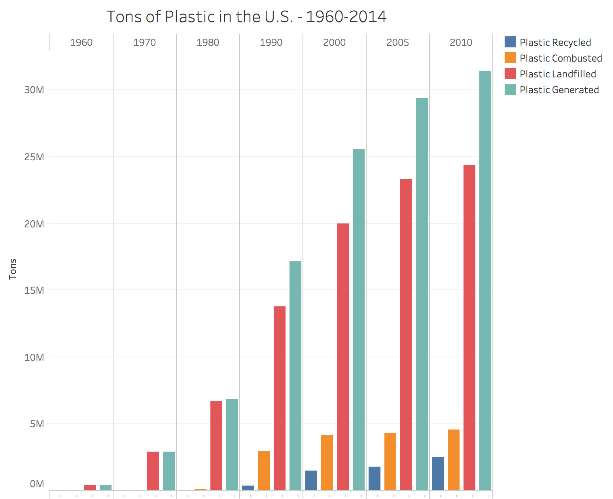

Part 4
US
How much does the U.S contribute to plastic pollution?
If you live hundreds of miles away from the coast, it probably never occurs to you that the plastic bag or the straw fragments that you toss into the sewer might make its way into the Atlantic or the Pacific. But somewhere between 40,000 and 110,000 metric tons of plastic waste generated by Americans end up in the ocean (Jambeck et al. 2015). This is the equivalent of throwing between 60 and 160 full-sized cars worth of weight in plastic into the ocean every day.

To update this with tableau graph - Jon
Most of the littered plastic waste worldwide ultimately ends up at sea. Swirled by currents, plastic litter accumulates over time at the center of major ocean vortices forming “garbage patches”, i.e. larges masses of ever-accumulating floating debris fields across the seas. One might think that because we produce so much plastic waste that we would be one of the main perpetrators, but in fact, the U.S. ranks 20th in the world for ocean pollution when it comes to plastic.